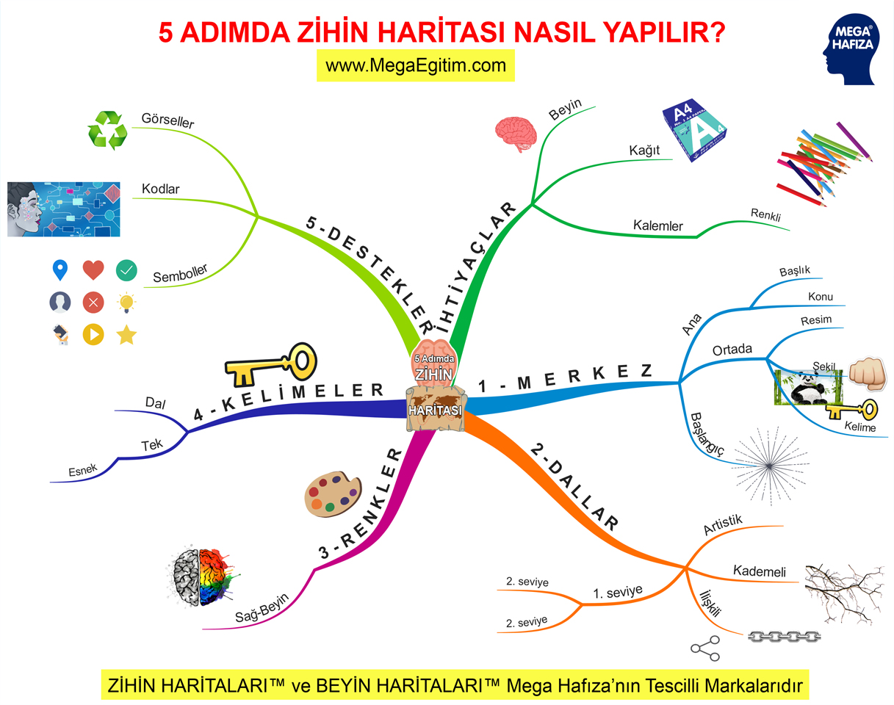

Kişisel Gelişim
 Hayatı Kendin İçin Yaşamayı Öğrenmek, Ben Diyebilmek
Hayatı Kendin İçin Yaşamayı Öğrenmek, Ben Diyebilmek
“Hatırım için”, “haydi bu da benim için”, “beni seviyorsan” ve daha nice sihirli sözcükle öğretilmiş bir hayatı sürdürmeye mahkum ediliriz çocukluk yıllarından itibaren. İyi bir çocuk olmak demek anne ve babasını üzmeyecek, onları yüceltecek sorumluluklarının bilincinde çocuk demektir pek çokları için ve zamanla çocukluk yıllarının masumane mutlu etme oyunu yaşam felsefesine dönüşür…

5 Adımda Zihin Haritası Nasıl Hazırlanır?
Not tutuyorsunuz ama unutuyorsunuz. Yeni bir fikir üretmek istiyorsunuz ama nereden başlayacağınızı bilemiyorsunuz. Öğrendiğinizi düşündüğünüz bilgileri gerektiğinde hatırlamakta zorlanıyorsunuz. Bir rapor, makale veya kitap yazmak istiyorsunuz ama planlama yapamıyorsunuz.
Not tutuyorsunuz ama unutuyorsunuz. Yeni bir fikir üretmek istiyorsunuz ama nereden başlayacağınızı bilemiyorsunuz. Öğrendiğinizi düşündüğünüz bilgileri gerektiğinde hatırlamakta zorlanıyorsunuz. Bir rapor, makale veya kitap yazmak istiyorsunuz ama planlama yapamıyorsunuz.
Hayatı Kendin İçin Yaşamayı Öğrenmek, Ben Diyebilmek“Hatırım için”, “haydi bu da benim için”, “beni seviyorsan” ve daha nice sihirli sözcükle öğretilmiş bir hayatı sürdürmeye mahkum ediliriz çocukluk yıllarından itibaren. İyi bir çocuk olmak demek anne ve babasını üzmeyecek, onları yüceltecek sorumluluklarının bilincinde çocuk demektir pek çokları için ve zamanla çocukluk yıllarının masumane mutlu etme oyunu yaşam felsefesine dönüşür…
Sahne Korkusunu Nasıl Yenersiniz?
Topluluk önünde konuşmaktan, sunum yapmaktan veya şarkı söylemek, gösteri yapmak gibi çeşitli performansları sergilemekten korku yaşayan kişiler, “performans kaygısı” dediğimiz korkuya sahiptirler.
Topluluk önünde konuşmaktan, sunum yapmaktan veya şarkı söylemek, gösteri yapmak gibi çeşitli performansları sergilemekten korku yaşayan kişiler, “performans kaygısı” dediğimiz korkuya sahiptirler.
Anıl